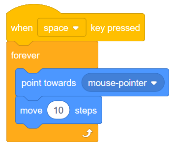
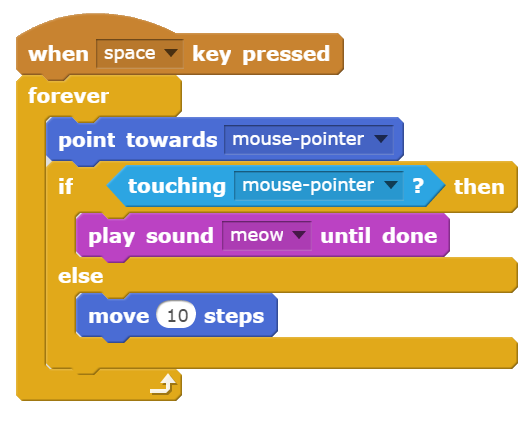
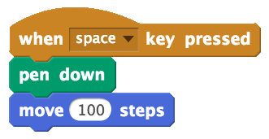
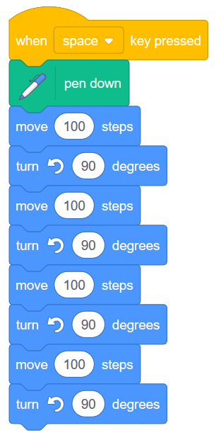
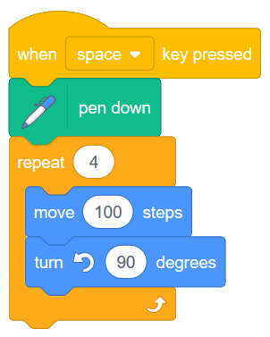
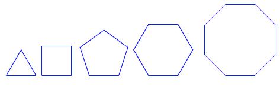

3. Chase the Mouse and Drawing Polygons (Repeat and If/Else)¶
Quick Overview of Day
Use a forever block combined with an if/else block to make a character follow the mouse, then make a sound when it reaches the mouse cursor. Introduce the pen in Scratch, and use it to draw regular polygons with the repeat block.
- CS20-CP1 Apply various problem-solving strategies to solve programming problems throughout Computer Science 20.
- CS20-FP2 Investigate how control structures affect program flow.
If you’d prefer to watch a video describing how to create your first Scratch program, the following video demonstrates the same ideas as what I’ve described in text below.
Warning
This is just a stub, to give a sense of what should go here. It will be written up properly soon…
3.1. Character Following the Mouse¶
Let’s make a program that has a cat following the mouse cursor around the stage, then meowing when it touches the mouse cursor. To start, hook up a forever block to a when key is pressed event block. Now put a point towards mouse-pointer block inside the forever block. Your program should look like this:

When you press the space key, you should see the cat continue to turn and face the direction of the mouse cursor. To make the cat move, connect a move 10 steps block as the last part of the forever block, as follows:
When you press the space key now, the cat should be following your mouse cursor around the screen. There is an obvious problem, however, when the cat actually catches the mouse. The cat overshoots the mouse, gets to the other side of it, turns around, then does the same thing all over again. Let’s fix this situation by having the cat stop moving when it gets close to the mouse, and make a meowing sound instead.
We learned in the previous lesson that anytime you want to ask the computer a question, you can do it using an if-then block. Although we could use an if-then block to ask whether the cat is close to the mouse, in this situation we want to do one thing if the cat is far away, and a different thing when the cat is close. For situations like this, we can use a if/else block. The question we want to ask the computer is whether or not the cat is currently touching the mouse pointer. If it is, we want to have the cat make a meow sound. If it isn’t, the cat should move closer to the mouse. To do this in Scratch, hook up an if/else block inside your forever block as follows:
Notice that when the cat touches the mouse cursor, the entire script pauses and waits until the sound has finished playing. If this isn’t the behaviour you want, you can use the play sound block instead of the play sound until done block.
3.2. Drawing Regular Polygons¶
Every sprite in Scratch has the ability to draw with a virtual pen that they are holding at all times. This allows each sprite to leave a trail that shows where they have walked. In order to do this, you need to use the pen down block from the Pen tab, then have your sprite move. Explore this by trying the following:
To remove the path you have drawn, double click on the clear block in the Pen tab.
Your Turn 1
Now that you know how to draw on the stage, see if you can draw a square using only the pen down, move __ steps and turn __ degrees blocks.
For many students, the first square they draw would be with code that looks like this:
Although this does create a square, notice that there is code that is repeated multiple times. Any time you notice identical code being repeated, it should trigger a warning bell in your head saying “There’s got to be a better way!”. Think back to when we made a sprite shrink. We used a repeat block. We can improve the drawing a square code above by making putting the code that shows up over and over into a repeat block, as follows:
Your Turn 2
Adapt the code above to allow you to draw the following regular polygon shapes: triangle (3 sides), pentagon (5 sides), hexagon (6 sides), octagon (8 sides). Set up your project so that pressing the t key draws a triangle, p draws a pentagon, etc.

If you complete the regular polygons before the rest of your classmates, try to draw a circle and a five sided star.

Although you may have used a guess and check method to determine the angles used to draw the shapes above, there is a pattern we can use to draw these shapes. Notice the angles that you used in order to draw the shapes:
| Shape | Sides | Angle Used |
|---|---|---|
| triangle | 3 | 120 |
| square | 4 | 90 |
| pentagon | 5 | 72 |
| hexagon | 6 | 60 |
| octagon | 8 | 45 |
Note
This lesson draws on ideas from the Beauty and Joy of Computing Curriculum .